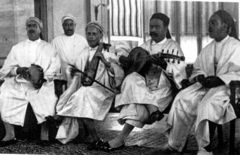
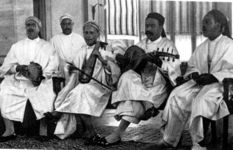

و يعتبر المعهد الرشيدي للموسيقى التونسية من أهم المدارس التي تحافظ إلى حدّ السّاعة على الطّبوع التونسية و تحرص على تعليمها للنّاشئة اضغط هنا لزيارة صفحتها على الفايسبوك
هذا بالإضافة للمهعد العالي للموسيقى بتونس اضغط هنا لزيارة صفحته على الفايسبوك
على غرار معهد قدور الصّرارفي للموسيقى الذي يعنى بالموسيقى التونسية و هنا رابط يدلّك على موقعهGPS
حيث يعتبر المالوف التونسي من التراث الذي لا بدّ من الحفاظ عليه، تتولّى وزارة الشّؤون الثقافية هذه المهمّة بصفتها سلطة إشراف، رابط وزارة الشؤون الثقافية اضغط هنا
| Evènements | Concerts | Clubs de Malouf |